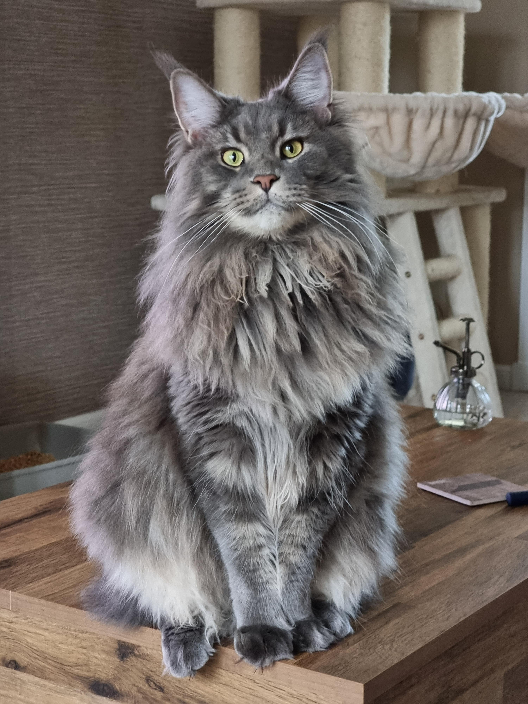
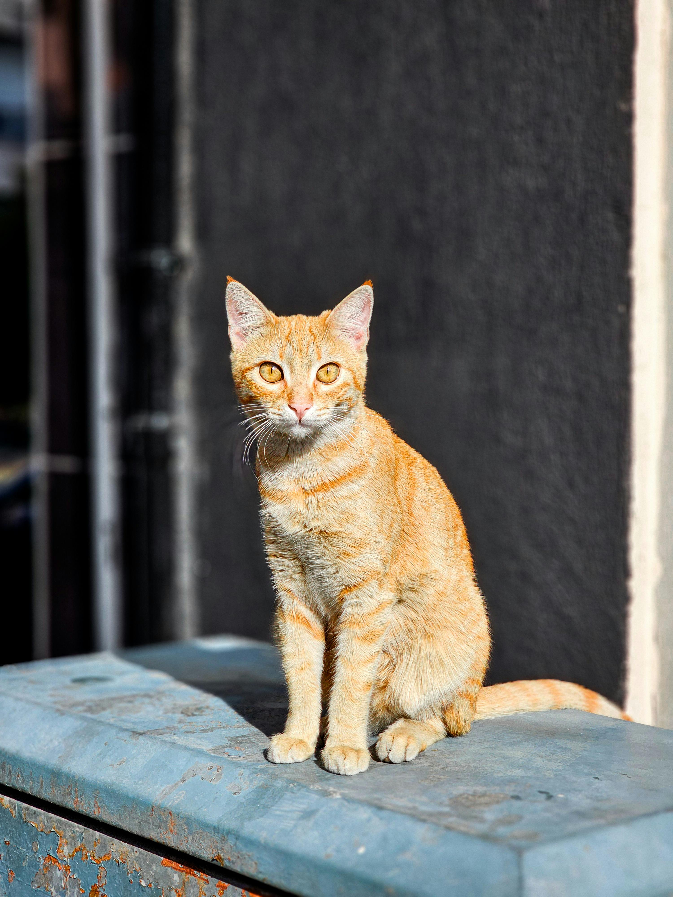

Here are a few of the many types of the many variations of cats!
Main Coons
Calicos
Orange Tabbies

This is a Main Coon cat which are larger house cats and are known for being intelligent.
This is a calico which has black, orange, and white coloring combined on their fur.

This is an orange tabby cat, and fun fact 80% of orange cats are male!